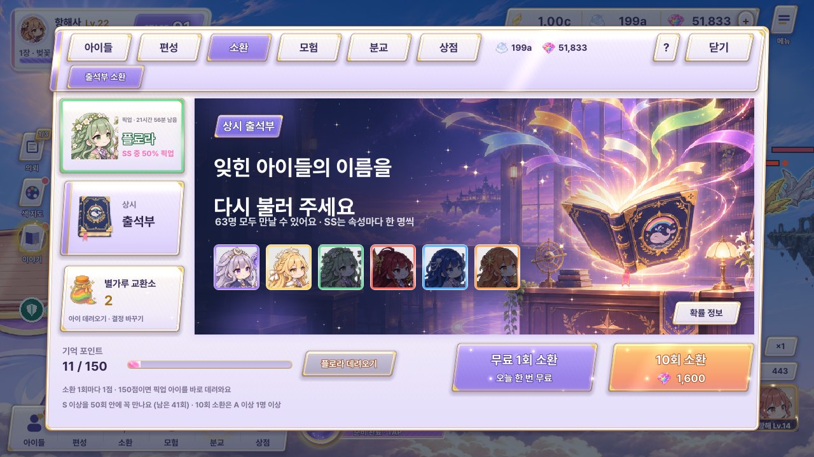
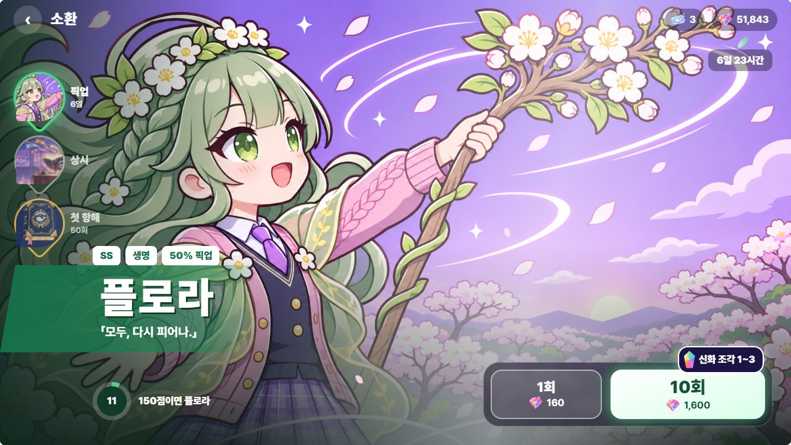
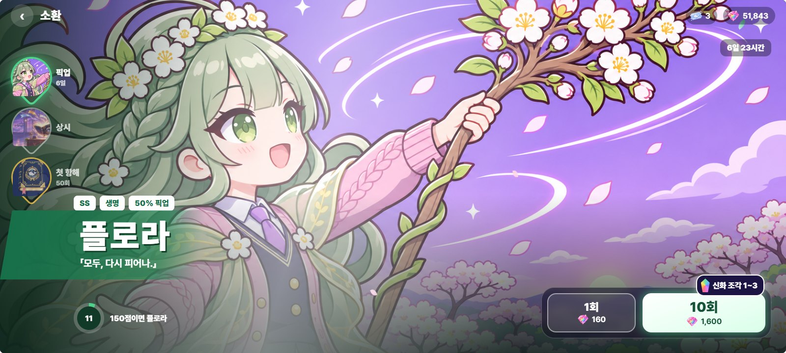

소환 탭 C 「전신 무대」 — 수정 시안 (#22)
PD가 고른 C 전신 무대를 조금 다듬고, 오른쪽 위(재화 · 확률 · 닫기)가 바쁜 그림 위에서 안 읽히던 문제를 고쳤습니다: ① 화면 위쪽에 아이 속성 색이 섞인 남색 그림자 띠(살짝 흐림), ② 재화 · 확률 · 닫기를 한 장의 유리 판(뒤 흐림 + 흰 테 + 금 밑줄)에 모으고, ③ 숫자에 그림자 · 칸 바탕. 닫기는 흰 동그라미로 어떤 그림 위에서도 먼저 보입니다. 아래에서 밝은 그림(아리아 · 플로라) · 바쁜 그림(이그니) · 어두운 그림(세레나) 위에서 확인합니다. 그림은 모두 게임에 있는 컷인, 대사는 scripts/roster.gd, 속성 색은 scripts/fx/ss_element_style.gd 값입니다.
지금 게임
메뉴 판 안의 배너 그림. 그림이 작고, 재화 · 닫기는 메뉴 판 위에 있습니다.


원래 시안 C (비교용)
오른쪽 위 재화 칩이 옅은 반투명 알약이라 흰 벚꽃 가지 위에서 숫자가 묻히고, 닫기 · 확률이 없었습니다. 움직이는 원본: feedback70/summon/index.html


1. 수정 C — 플로라 픽업 (밝고 바쁜 그림)
그림 위 그림자 띠 + 유리 판 · 속성 입자 · 이름 띠
그림은 천천히 숨 쉬듯 다가오고(1.035배), 오른쪽 가장자리에 속성 빛(생명 초록), 잎 · 꽃잎이 흩날리며 빛이 한 번씩 비스듬히 지나갑니다. 이름 띠는 위에 속성 연두 → 크림 금줄, 10회 버튼은 속성 빛 + 반짝임 + 무지개 신화 조각 딱지. 오늘 무료 1회가 있으면 1회 버튼이 「무료」로 바뀝니다(지금 게임과 같음).
플로라
모두, 다시 피어나.
2. 오른쪽 위만 확대 — 원래 칩 vs 수정 유리 판
밝은 · 바쁜 · 어두운 그림 4장 위에서
왼쪽은 원래 C의 옅은 알약 칩(재화만, 닫기 · 확률 없음), 오른쪽은 수정판입니다. 밝은 그림(아리아의 연보라 하늘 · 플로라의 흰 꽃)에서 원래 칩은 흰 숫자가 바탕에 묻히고, 바쁜 그림(이그니의 불새)에서는 무늬와 겹칩니다. 수정판은 띠 그림자 → 유리 판 → 칸 바탕 세 겹이라 어느 그림에서도 대비가 일정합니다.
3. 다른 아이 픽업일 때 (같은 틀 · 속성 색만 바뀜)
아리아 · 빛 — 밝은 연보라 그림
아리아
누구도, 다시는 잃지 않아.
빛 = 금 · 크림깃털 입자, 위 띠는 남색에 금빛이 섞여 연보라 하늘 위에서도 판이 떠 보입니다
이그니 · 불꽃 — 오른쪽 위가 불새로 바쁜 그림
이그니
재 속에서도, 나는 다시 타올라.
불꽃 = 진홍 · 주황불티가 아래에서 올라오고, 위 띠가 불새 날개 끝을 눌러 줘 판 테두리가 또렷합니다
세레나 · 별 — 어두운 별밤 그림
세레나
모든 별이 내 편이야.
별 = 보라 · 라일락어두운 그림에서는 띠가 거의 티 나지 않고, 유리 판의 흰 테 · 금 밑줄이 판 경계를 잡아 줍니다